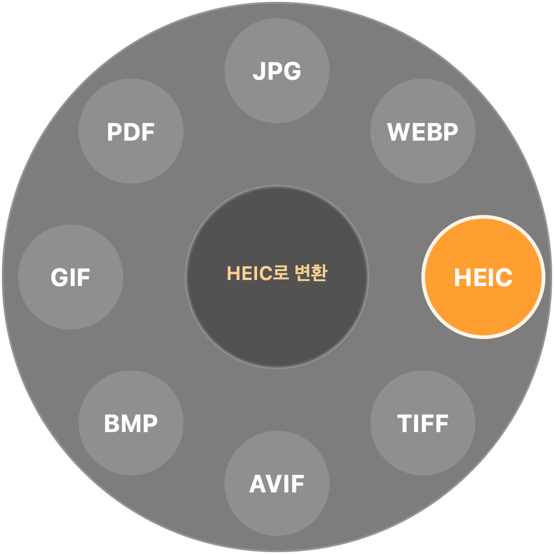
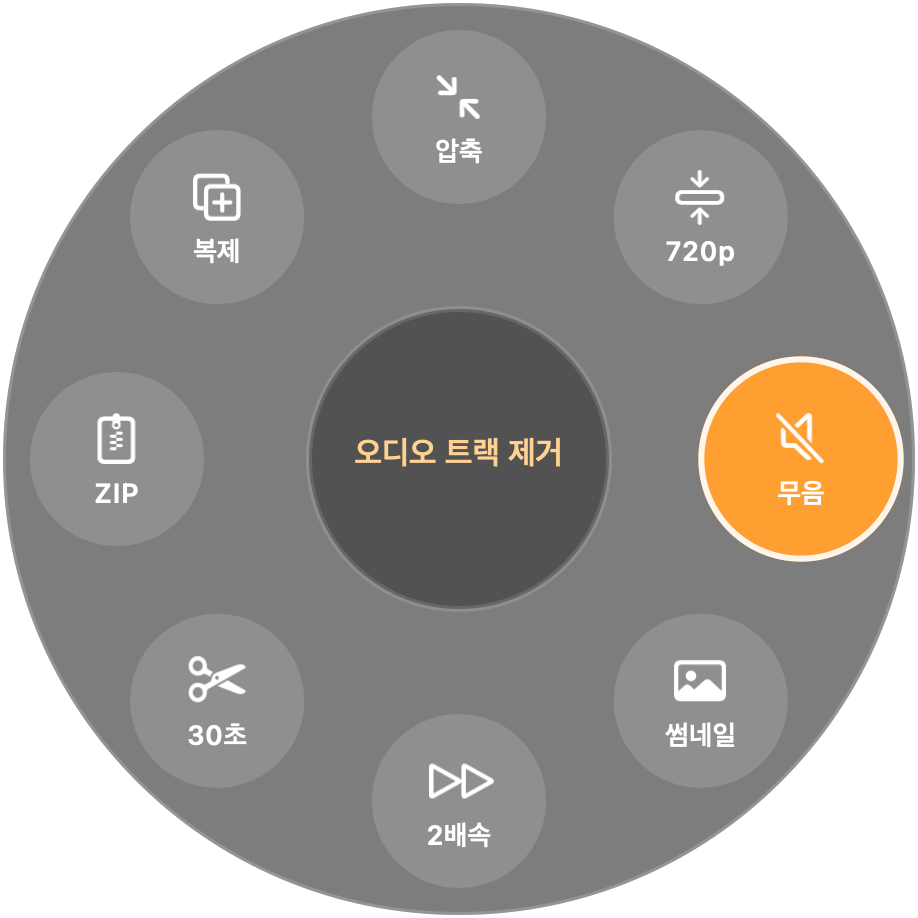
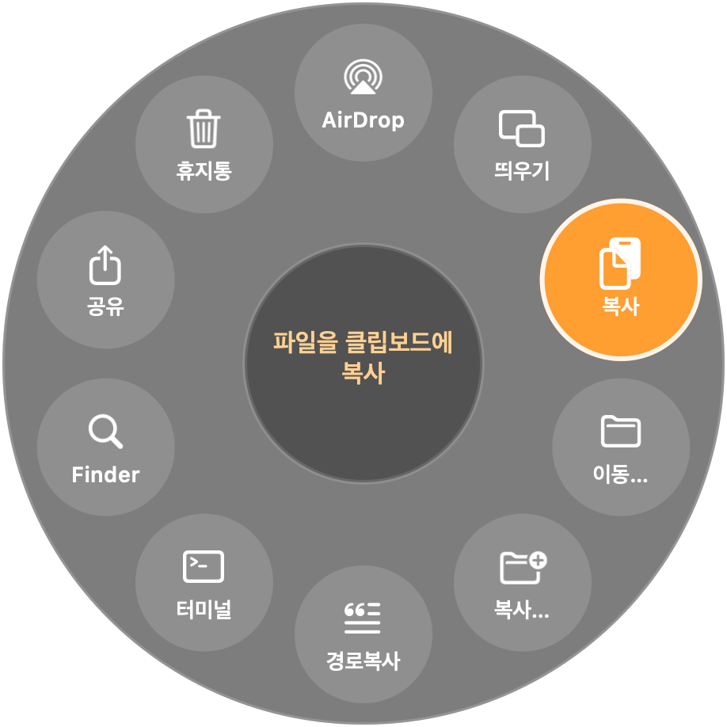
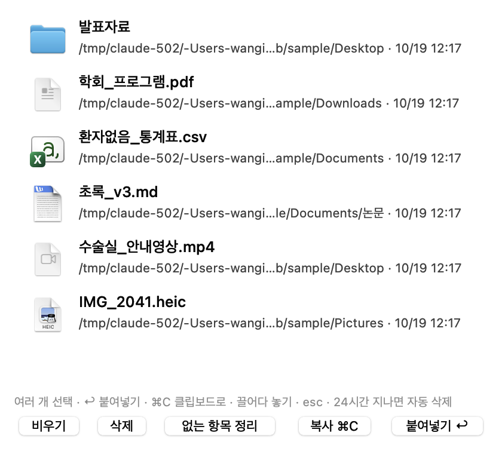

파일을 드래그하는 그 손으로 키 하나. 변환·도구·동작이 커서 주변에 뜹니다.
서버 없음. 업로드 없음. 전부 내 맥 안에서.
사진을 끌면서 ⇧. HEIC에 놓으면 HEIC가 됩니다. 영상은 GIF로, PDF는 페이지별 PNG로, 워드는 PDF로. 원본은 그대로, 결과는 옆에.

같은 손짓에 ⌘만 바꾸면 도구가 나옵니다. 파일 종류를 보고 쓸 수 있는 것만 보여줍니다.

AirDrop으로 보내기, 항상 위에 떠 있는 미리보기, 폴더 골라서 이동, 그 위치에서 터미널 열기. 끌던 손을 놓지 않고.

Finder에서 ⌘C할 때마다 쌓입니다. ⌘V는 평소대로 마지막 것. ⌘⇧V를 누르면 복사함이 열리고, 여러 개를 골라 한 번에 붙여넣습니다.
모든 변환은 이 맥의 프로세서에서 끝납니다. 인터넷이 끊겨도 똑같이 동작하고, 계정도 없습니다.
brew install ffmpeg). 없으면 MP4·MOV·M4A만brew install --cask libreoffice). 없으면 TXT·RTF·HTML·DOCX 상호 변환만brew install webp)v0.2 · 2026-10-19 · dolmaro technica
dropboy.app을 응용 프로그램 폴더로. 로그인 시 자동 실행은 메뉴에서 켠다.
App Store 밖에서 받은 앱이라 첫 실행만 Gatekeeper가 막는다. 막히면 시스템 설정 → 개인정보 보호 및 보안 → "그래도 열기". 또는 터미널에서:
xattr -dr com.apple.quarantine /Applications/dropboy.app메뉴바에 아이콘이 생기면 끝. Finder에서 아무 사진이나 끌면서 ⇧를 눌러본다.